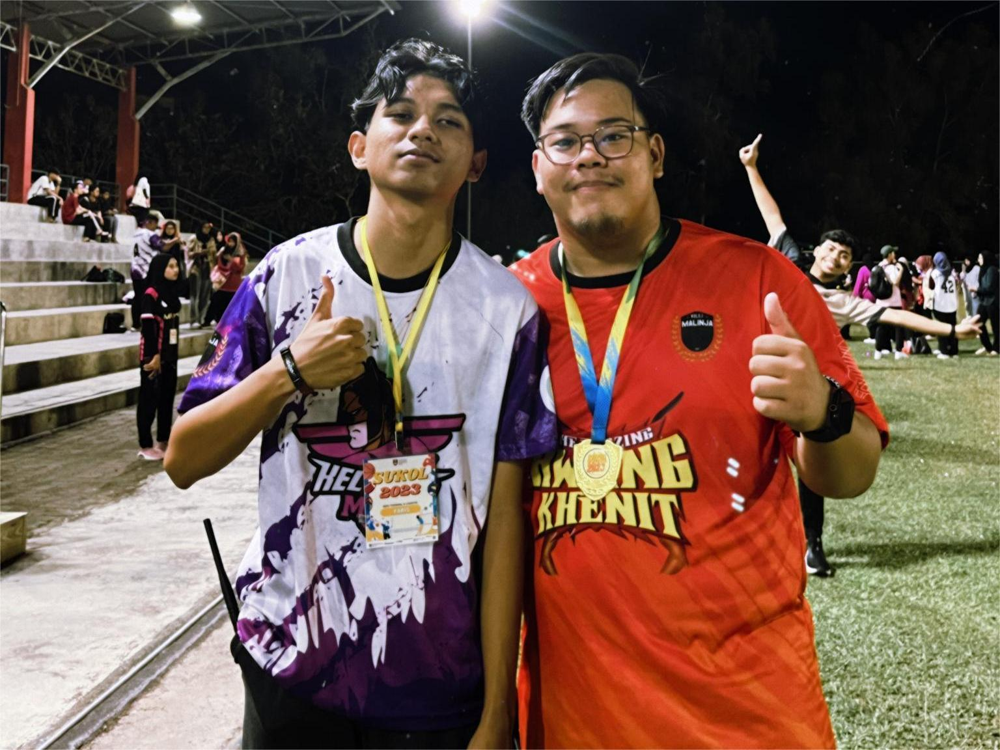
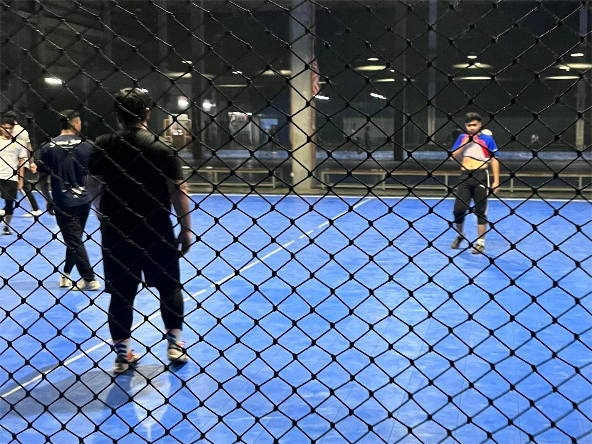
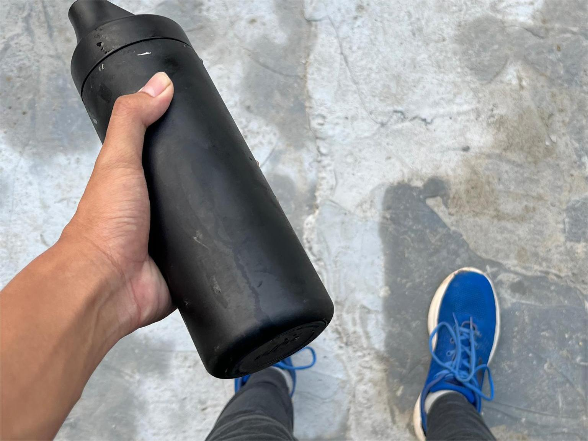
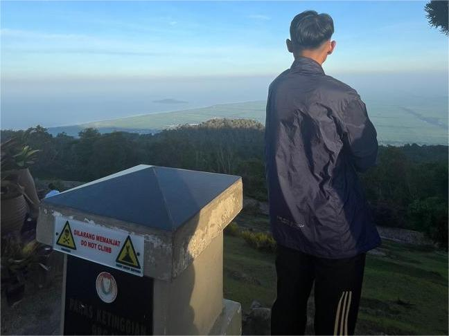
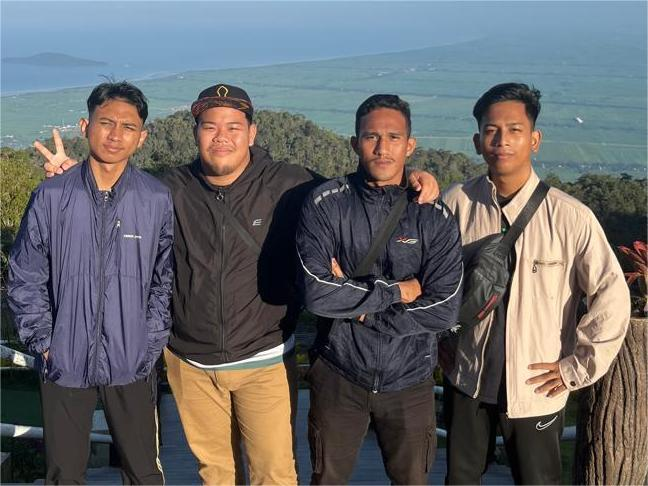

WELCOME TO MY PERSONAL WEBSITE MUHAMMAD FARIS IZZAT BIN MOHAMAD TARMIZI
MY HOBBIES
Float images side by side:
My first hobby is i like to do some sport such as playing futsal,do some jogging and also other sport such as badminton or football
Other that that i like to do some relax sport such as yoga or playing around with friend
Most of the sport i playing is the most popular sport in my country and the place i live



My second hobby is i like to do hiking in mountain with my friends
Sometimes i just hiking with my friends in Jerai mountain and in Melaka i hiking ini bear mountain


A hobby provides a personal sanctuary where one can escape the rigors of daily responsibilities and immerse in an activity purely for enjoyment. Whether it’s painting, hiking, reading, or gardening, engaging in a hobby offers numerous benefits that enhance both mental and physical well-being